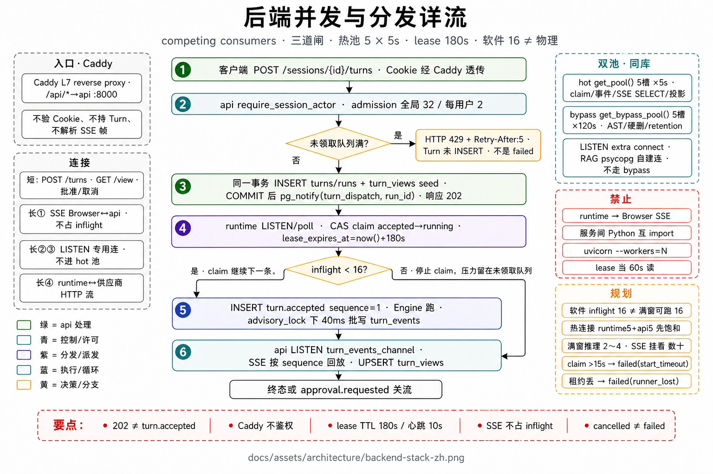
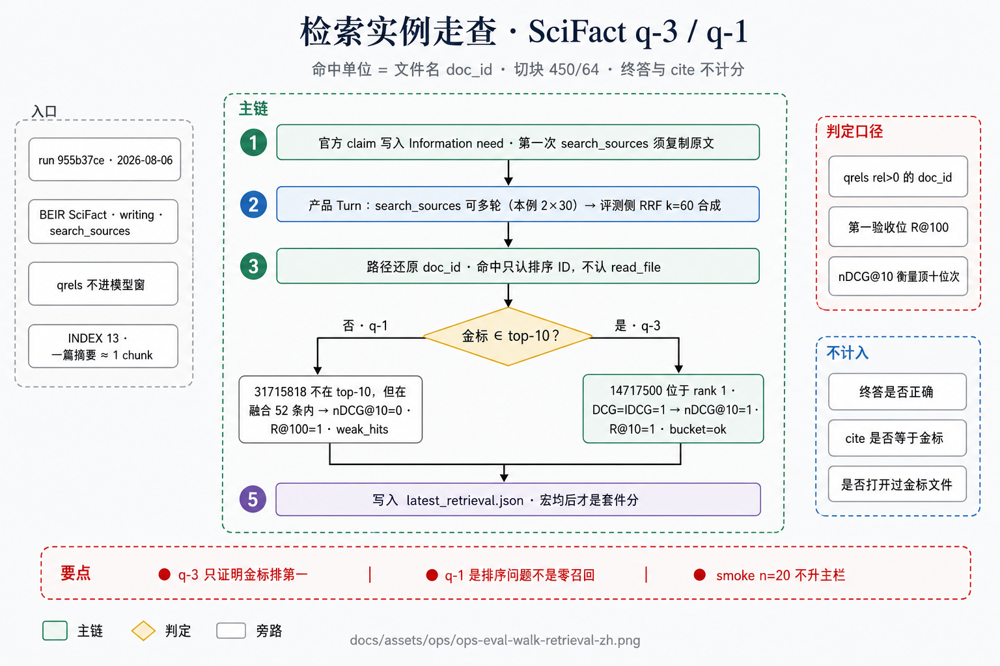
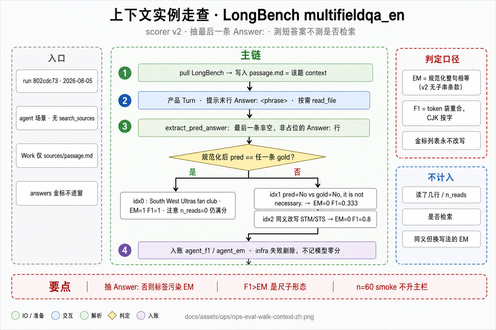
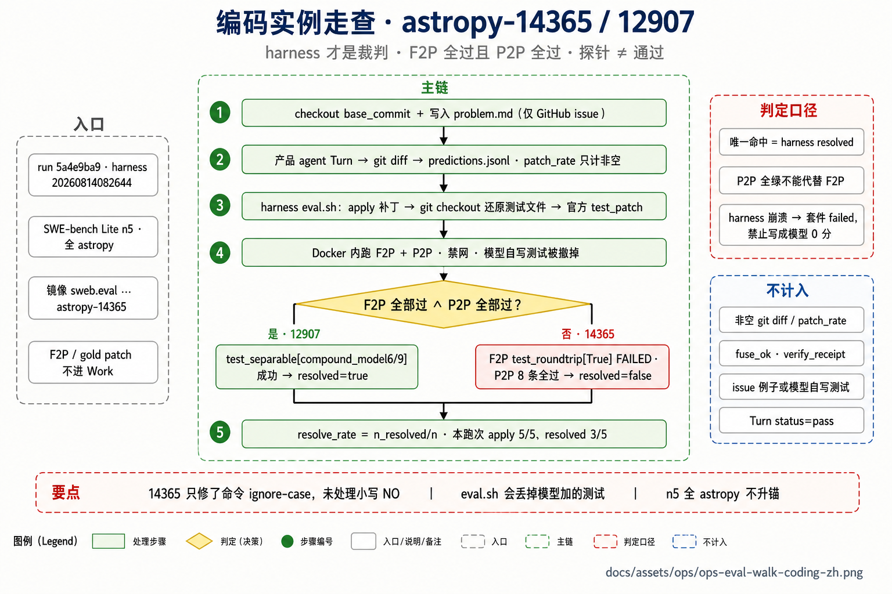
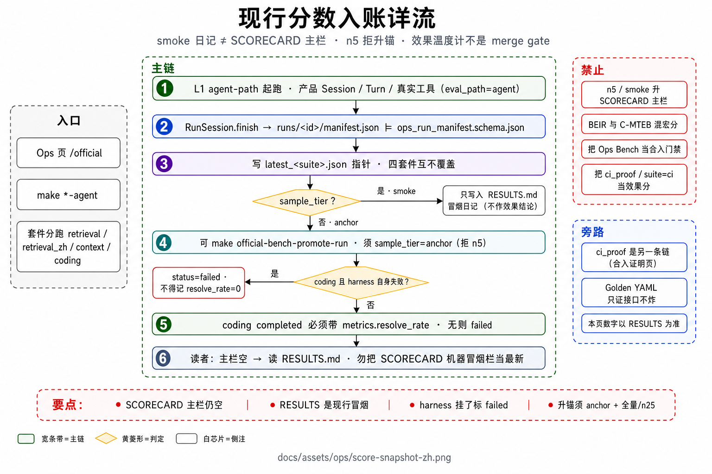
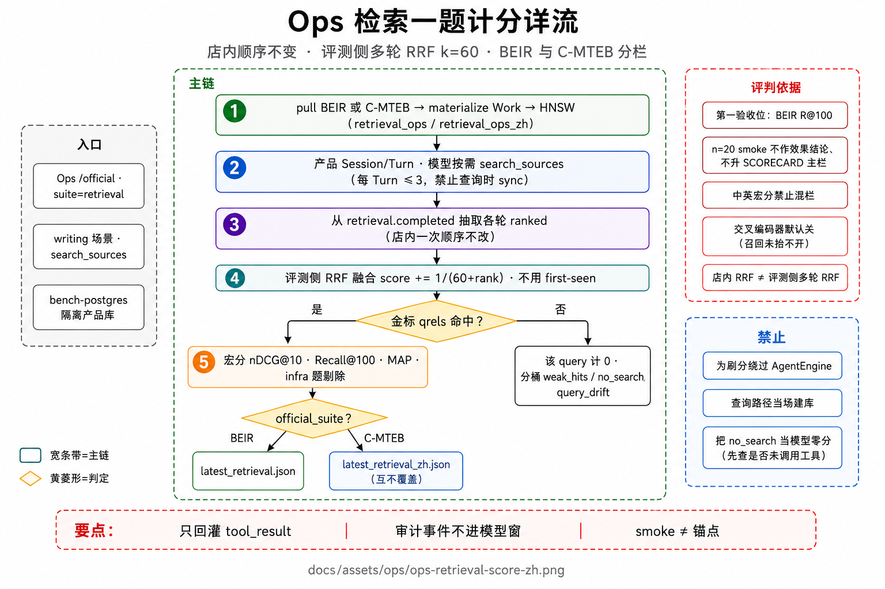
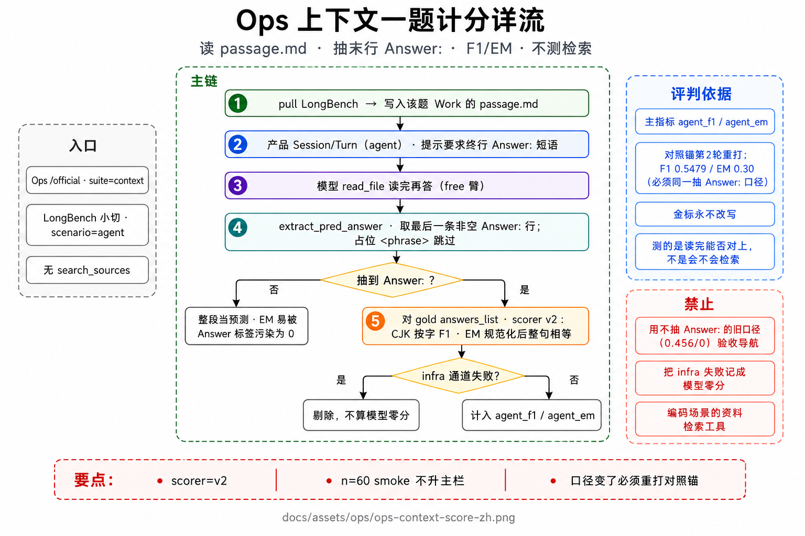
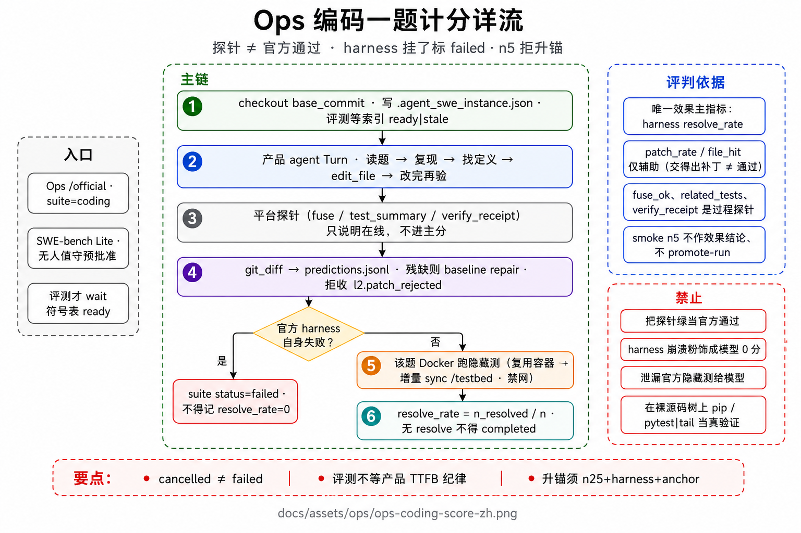

一个内核，多个场景
自托管 Agent Runtime。AgentEngine 的 while 形状固定；写作 / 编码 / 情报的差异仅经 ScenarioProfile 注入工具白名单、系统提示、审批覆盖与检索过滤。图给出分支与并行段；本导览按逐步经过展开节点职责。事件名标识落库形态，不替代控制流。
读法
- 左侧目录与顶栏翻页；主图点击放大。先沿中间箭头链读分支，再对照本页逐步：标题为该步职责，灰字为约束与失败形态，绿色芯片为事件或字段名。
- 「Ops 效果」先读评测原理，再以本地实例核对命中定义；第 4 轮 smoke 为宏分，合入 CI 另列。
- 冲突裁决：代码与契约优先，其次
docs/core/docs/topics六篇正文。本导览不另立权威。 - 左上角 AgentPlatform 返回 GitHub 主仓库。在线站点 zodirc.github.io/AgentPlatform；本地
make docs-tour。GitHub 文件视图中的 HTML 只是源码。 - 流程图按章下载（每张约 1.3–1.9MB）。GitHub Pages 没有预热或加长缓存的仓库开关；进入该页才取图，再次打开走浏览器与 Service Worker。
原则与速率红线
扩展能力时写入既有工具的结果契约，或放到 Turn 热路径之外的旁路。禁止改 AgentEngine 的 while 形状，禁止让模型再学习一套导航工具名。下列五条是用户提问热路径的验收，不是口号编号。
-
1
R1 · 不挡受理
符号表构建、资料库同步、官方评测均不得同步阻塞 Turn 受理。
不挡受理turn.accepted与 TTFB 不因新逻辑恶化。产品对话不等索引 ready。 -
2
R2 · 首 token 前不加同步模型
禁止在热路径上同步摘要、裁判或改写。此类工作可异步；不得在首 token 前再阻塞一次供应商调用。
首 token 前不加同步模型 -
3
R3 · 热路径 CPU 毫秒级
整库向量化、全仓扫描禁止上主链。查找定义时只读已构建的内存符号投影，不在提问路径上重解析工作区。
热路径 CPU 毫秒级 -
4
R4 · 重活异步
资料索引、审计漏斗、软预压缩走旁路。Turn 结束后若窗口填充偏高，可后台刷新
重活异步sessions.context_summary，不挡下一 Turn 首 token。 -
5
R5 · 可测才合并
可测才合并make gate与完整证明脚本构成合入门禁。官方 Bench 是效果温度计，eval_path=agent，不进 StartTurn 热路径，也不是 merge gate。
不变量
- api / runtime / web 之间禁止 Python 互 import。跨服务实时事实桥仅为 Postgres：
INSERT+NOTIFY/LISTEN。 - AgentEngine 禁止
if scenario == "…"；场景差只经 Profile / ToolScope。未知 hook 槽位或实现名启动期 fail-fast（make constitution-check）。 - 用户取消的终态为
cancelled，cancelled ≠ failed。审批挂起后以同一run_id+ checkpoint 续跑；不存在 ResumeTurn。 - 审批门 = 是否允许执行；沙箱门 = 进程可写范围。官方编码评测另有解题改道：测试进入该题 Docker 镜像，与上述两门正交。
- 编码场景不提供
search_sources，不以资料检索定位代码。写作场景不打开 LSP 结构工具。 - 冒烟分数不升 SCORECARD 主栏。官方 harness 自身失败不得标成模型
resolve_rate = 0。
docs/core/architecture.md · docs/core/tools-and-context.md部署拓扑
浏览器只访问产品面 http://localhost/。Caddy 将 / 交给 web，将 /api/* 与 /health/* 交给 api :8000。runtime 不对浏览器开 SSE。默认 TURN_DISPATCH=pull：api 落库后 NOTIFY，runtime 自行领取并心跳续约。
-
1
网关只做 TLS 与路由
Caddy :80/:443。不持有业务状态，不实现鉴权。发布台
:9090是同仓旁路控制台，不替代产品面。 -
2
api 落库 Turn/Run 并通知分发
鉴权、校验 session/work/scenario、未领取队列满则 429 + Retry-After。同一事务写入 turns/runs 与视图种子后
NOTIFY。api 不跑 Agent loop。客户端先得 202，表示已入队，不是turn.accepted。 -
3
runtime 在并发额度内领取，租约心跳续约
默认每副本同时在跑的 Turn 上限 16。满负荷停止领取，压力挡在 api 准入。心跳丢失且无法安全续跑 →
failed(runner_lost)，控制面可回收给其他副本。超过 claim 时限无人领取 →failed(start_timeout)。回退模式才是 api HTTP 推start-turn到 runtime :8001（不公网）。 -
4
runtime append-only 写
turn_events；api 分流 SSE 与投影推理、工具、审批均在 runtime。api LISTEN 后按
turn_id入队：SSE 按 sequence 回放，投影 UPSERTturn_views。工作台只消费事件流与GET /view，不推断阶段。 -
5
符号表与评测在旁路
ast-indexer 后台解析工作区符号，领取解析任务时
SKIP LOCKED。对话路径只查询已建内存表。bench 使用隔离库（可选 bench-postgres），避免评测向量污染产品资料。发布台对比 HEAD / 工作树 / 已部署指纹，标 dirty 后分模块up-*。
| 组件 | 职责 | 明确不做 |
|---|---|---|
| web | 场景工作台；消费 SSE 与 GET /view | 推断 Turn 阶段；直连 runtime |
| api | 鉴权、准入、落库、NOTIFY、LISTEN、SSE、投影、Ops 旁路 | 跑 Agent loop |
| runtime | 领取与续约、Intake、Engine、工具、检索、checkpoint、写事件 | 对浏览器开 SSE；UI 投影 |
| ast-indexer | 后台 AST 符号表；cgroup 768m / 1 CPU | 进 Turn 热路径；替代 LSP；进入资料检索向量面 |
| bench | 官方评测 worker；mem_limit 6g（GPU overlay 12g） | 日常用户提问路径 |
资源量级（make up）
- cgroup 合计约 14g；建议宿主 ≥16 GiB，磁盘空闲 ≥40 GiB
- postgres / bench-postgres 各 1g；runtime 4g（GPU → 12g）；api 1g
- 无 GPU → gte-small@384；VRAM≥8GiB → bge-m3@1024。runtime 与 bench 各加载一份权重
常用命令
make up（先拉起再只重建 dirty）/make up-all- 主机重启优先
make start；make smoke/make gate - 发布台
:9090；SWE 环境make ops-swe-eval-ready
下图为发布台：对比代码、标 dirty、分模块重建。上文逐步是日常请求穿过 Caddy → api → runtime。
README.md · deploy/docker-compose.yml · docs/core/architecture.md
后端：容器、负载与并发
四层栈划分产品入口、控制面、执行面与数据面。启动受 compose depends_on + service_healthy 约束；跨服务实时事实只经 Postgres（INSERT + NOTIFY / LISTEN）；水平扩容增加 runtime 副本，每副本 inflight 默认 16。
-
1
公网仅进入产品面：Caddy 将
/交给 web，将/api/*与/health/*交给 api默认栈：
agent-gateway:80/:443，agent-web，agent-api:8000，agent-runtime:8001（不对浏览器暴露），agent-postgres，agent-ast-indexer。可选 overlay：bench、ha（runtime-a/runtime-b）、queue、runtime-lite。发布台是宿主机进程:9090，不是第二套产品栈。无 FastAPI CORS；假定经网关同源。 -
2
启动顺序由
depends_on与健康探针决定postgres先pg_isready（bench-postgres仅 profilebench）。runtime等 postgres，探针/health/live（start_period120s；未配置模型仍可起栈）。web无依赖。ast-indexer等 postgres+runtime；api同样（bench 为required: false）。api lifespan：pool → Alembic → 回收陈旧 Turn / 滞后投影 / 过期租约 →LISTEN turn_events_channel。gateway等 api+web healthy 之后，产品面:80/:443才对外。make start不 rebuild；make up只重建 dirty；make up-all强制全量。 -
3
mem_limit是单容器 cgroup 上限，不是宿主预留postgres / bench-postgres 各 1g；api 1g；runtime 4g（GPU overlay → 12g）；ast-indexer 768m / 1.0 CPU；bench 6g（GPU → 12g）；web / gateway 未设硬限。容器 RSS 之和仍可能打满物理内存。无 GPU → gte-small@384；VRAM≥8GiB → bge-m3@1024。runtime 与 bench 各加载一份权重。日志 json-file 10m × 3。
-
4
两级压力闸：控制面准入满则 429；执行面 inflight 满则停止 claim
仅 pull 生效。未领取队列全局默认 32、每用户 2；满员返回
dispatch_queue_full/per_tenant_queue_full+Retry-After: 5，Turn 尚未创建，不是failed。RUNTIME_MAX_INFLIGHT_TURNS默认 16 / 副本；租约 60s、心跳 10s。无人领取超过 15s → 先 202，后failed(start_timeout)；租约丢失 →failed(runner_lost)。 -
5
扩容增加 runtime 副本；跨服务事实经 Postgres 闭环
默认 1 份；
make up-ha以--scale runtime=0起runtime-a/runtime-b。总 inflight ≈ 副本 × 16。共用同一 Postgres 与agent_data，不改 Engine，不配置RUNTIME_URL_MAP。读dispatch_wait_seconds/dispatch_queue_depth再扩。apiINSERT+pg_notify(turn_dispatch_channel)→ runtimeLISTEN/claim →INSERT turn_events触发turn_events_channel→ apiLISTEN后 SSE /turn_views。取消/批准走run_commands_channel。HTTP 每容器单进程 uvicorn，勿设workers=N。indexer / bench / 发布台不挡受理。
| 机制 | 旋钮（现行默认） | 饱和时 |
|---|---|---|
| 分发 | TURN_DISPATCH=pull | LISTEN / claim；push 为 HTTP 回退 |
| 准入 | 全局 32 · 每用户 2 | HTTP 429 + Retry-After 5s |
| 副本 inflight | 16 | 停止 claim |
| 租约 | 60s / 心跳 10s | runner_lost 回收 |
| claim 超时 | 15s | 先 202，后 start_timeout |
| AST 队列 | SKIP LOCKED | 可多 indexer，不进热路径 |
| 周期任务 | pg_try_advisory_lock | 单跑 reconcile / 保留 |
下图为分层架构：左栏启动依赖，中环经 Postgres 的 NOTIFY/LISTEN，执行面虚线槽表示再增加 runtime 副本。领取与 StartTurn 写序见后文；dirty 重建见上一页发布台。
deploy/docker-compose.yml · deploy/compose/ha.yml · admission.py · turn_dispatch.py
领域对象与 Turn 状态机
用户心智是一份稿或一个仓库。工程上拆成四层，使稿件世界与单次对话解耦：Principal → default Work → Session* → Turn ↔ Run（1:1）。
-
1
Work 是稿件与资料的世界根
持有
work_id/work_root。大纲、正文、资料目录与.agent/work/元数据挂在此树。Session compact 不得拆散 Work。 -
2
Session 是连续性容器
承载 transcript、策略与压缩摘要，并携带
work_id。同一 Work 可开多条 Session；切换 Session 不切换默认 Work。 -
3
Turn 是一次用户输入的业务闭环
从受理到
completed/failed/cancelled。恰好对应一个 Run。取消后再对话是同 Session 的新 Turn；不存在 ResumeTurn。 -
4
Run 是 agentic loop 的执行实例
持有 runner 租约；checkpoint、取消、审批均挂在
run_id上。waiting_approval是横跳，不是终态；批准后同实例续跑。
状态机：pending → running ⇄ waiting_approval → completed | failed | cancelled。分发失败仍属 failed 族：start_timeout（超过 claim 时限无人领取）、runner_lost（租约丢失且无法安全续跑）。二者均不等于用户取消。
下图为 Turn 生命周期。等待审批是横跳，不是终态。

请求主路径（端到端）
客户端提交 Turn 之后，业务首事件不是 HTTP 202，而是 runtime 领取后发出的 turn.accepted。首 token 时间以该事件经 SSE 到达浏览器的时刻计。
-
1
工作台 POST Turn 到当前 Session
api 鉴权并校验 session、work、scenario。全局/租户未领取队列已满 → 429 + Retry-After，避免把 runtime 过载当成排队。
-
2
同一事务写入 turns、runs 与视图种子，并 NOTIFY 分发通道
领取制且可领取时才通知。客户端此时获得 202：请求已被接受入队。
-
3
runtime 领取 StartSpec 并续约，发出
turn.acceptedStartSpec 含场景、计划相位；官方评测另带无人值守标记与模型密文。从此刻起才有业务首事件。
turn.accepted -
4
Intake 确定性整理输入，再进入 Engine 或本地完结
InputCompiler 处理斜杠命令、@路径、附件。
shouldQuery为否时（如/help）零模型结束。scenario_id由 API/会话指定，不由模型推断。 -
5
循环内关键节点 append-only 写入
turn_eventsthinking / 文本增量、工具起停、审批请求均带递增 sequence。api 监听到
turn_id后：按序号回放 SSE，并 UPSERT 列表快照。turn.thinking.delta默认只走 SSE，不进 view。 -
6
工作台只消费 SSE 与
GET /viewUI 不推断阶段。断线用 Last-Event-ID 续传。runtime 不对浏览器开流，进程内 channel 不得当事唯一源。Turn 热路径禁止同步重投影。
下图为该链的控制流海报。编号圆与箭头对应上述逐步。

StartTurn 命令链
api 尽快只做落库与分发通知，不把任务推到 runtime。取消、审批、接受补丁默认走 run_commands + NOTIFY，由当前持有租约的 runtime 消费。HTTP 内部命令仅为兼容回退。
-
1
客户端
POST …/sessions/{id}/turnsapi 校验 session · work · scenario。未领取队列满则拒绝并返回 Retry-After。
-
2
落库后立即 202，同时 NOTIFY 分发通道
turns 与 runs 同一事务写入。浏览器可开始监听 SSE，此时尚无
turn.accepted。 -
3
runtime 领取后发出
turn.accepted，进入 Intake超时无人领取 →
turn.acceptedfailed(start_timeout)。租约丢失且无法安全续跑 →failed(runner_lost)。回退模式下 api HTTP 调 runtimestart-turn，传输失败则客户端 502。 -
4
控制命令送达持约副本
取消（软
cancel_requested/ 硬cancel_force）、工具审批、patch 接受/拒绝、索引同步均写入命令表并 NOTIFY。仅持约 runtime 消费。 -
5
官方评测 Turn 在 StartTurn 即预批准写盘与 exec
无人值守，不拦人审；预批准字段随 checkpoint 存活。编码评测可在开题前等待符号表 ready（仅评测套件）。产品对话仍先受理，不等索引。
下图菱形「是否领取制」对应第 2–3 步。样板为 docs/assets/events/start-turn-command-zh.png。
services/api/app/routers/ · services/runtime/app/controller/turn_dispatch.py · turn_controller.py
TurnController 与 AgentEngine
TurnController 不进入 while：负责领取、加载 ScenarioProfile、组装 ToolScope、Intake、发出 turn.accepted、收尾写终态。反复执行「组窗 → 问模型 → 跑工具」的是 AgentEngine。Guard（取消 / 分层超时 / Stall Watchdog）旁挂全程，不是 while 内新节点。
-
1
ContextEngine.assemble：为本步拼出模型窗
先做卫生：超长 tool_result 头尾截断（默认约 4k 字；刚成功读完的文件可至约 32k）、同路径旧读取折成短占位、成串已完成的旧工具结果折短。填充率再按 0.80 / 0.90 / 0.95 三档加压。只改本步送给模型的窗；磁盘稿通常仍完整。系统提示求稳定；工具 schema 单独一份；作品规矩与焦点走易变垫底。
-
2
ModelGateway.stream：流式调用，中途可 abort
仅在尚未吐出 token 前允许重试。取消必须打断 backoff 与供应商 HTTP 流（Cancel 轮询约 50ms）。超时分层：首字节快超时 + step/model/tool；Stall Watchdog 防卡死。
GenerationParams对齐输出预留、scenario temperature、tool_choice。 -
3
解析 text · thinking · tool_use
三类增量分事件写入。
turn.thinking.delta默认只走 SSE，不进turn_views正文快照。 -
4
有 tool_use：审批门 → 执行 → tool_result 回灌 → checkpoint → 回到 assemble
handler 可整条改道而工具名不变（翻页读文件 →
read_file；评测 pytest → 该题 Docker）。编码路径更新「还欠测试 / 还欠 issue 例子」。连续只读可并行；写盘 / shell 串行。 -
5
无 tool_use：若终稿仍欠验证，注入 verify receipt 并 continue
平台写入一条用户口吻消息（菜单不可见，记录亦非
tool_result），并落tool.completed（verify_receipt=true）。否则输出终稿，结束本 Turn。编码最多催两类各一次；剩余步数不足（默认须留 10 步）则省略。这是第 5 步的旁路 continue，不是新图节点。
步数上限：编码约 150，写作为 40。Engine 不读取 scenario 名字；差别只在开工时装入的工具与提示。
turn_controller.py · agent_engine.py · engine/state.py · engine/verify_receipt.pyAgentEngine 单循环
加能力 = 增强工具或结果契约，不改这条 while 的形状。下图是权威控制流；上一页已说明每一格的职责。想收工却仍欠验证时的再跑一轮，是第 5 步旁路 continue，未改海报骨架。
进循环之前还有 Intake：斜杠命令与 @路径当场处理。不需要模型的命令直接 turn.completed。需要模型的，首轮由模型决定直答或 tool_use。场景不由模型推断。
海报中间自上而下的箭头链即 assemble → stream → 解析 → 工具或终局。左右为旁注，不是第二套主链。

审批门、取消与同 run_id 续跑
审批门决定是否允许执行；沙箱门决定进程可写范围。官方编码评测将测试改道进入该题 Docker，与这两门正交。
-
1
需审工具进入
waiting_approval，Run 仍在同
run_idcheckpoint 必须包含「还欠测试 / 还欠 issue 例子」。批准后续跑；不得另起 Run，否则行为门丢失。 -
2
批准则续跑；拒绝则把原因写入
tool_result模型据此改方案或结束本 Turn。拒绝不等于将 Turn 标为
failed。 -
3
同 Turn 粘性：写盘批准一次后同类写盘免再审
run_command第一次仍须审；通过后本 Turn 后续同类 shell 可免再审。Plan 进入executing只预授权清单内写盘，不等于 shell 免审。普通进度清单更新 ≠ 已批准开工。 -
4
取消是终态：
cancelled ≠ failed软取消
cancel_requested请循环协作停下；硬取消cancel_force可杀模型流与子进程。必须能打断 backoff 与供应商连接。再对话 = 同 Session 新 Turn。
下图菱形为「是否等待审批」。挂起后走同一执行实例的 checkpoint，不是新 Turn。
engine/state.py · controller/checkpoint_store.py · approval / cancel 路径
TurnState：审批挂起后必须仍能验证
执行态 dataclass，经 checkpoint 序列化。审批中断后再续跑，不得丢失「还欠测试 / 还欠 issue 例子」；否则行为门在恢复后失效。
须恢复的核心字段：ids、messages、步数、取消标志、计划相位、是否官方评测、写盘/exec 是否已预批准、已读文件登记（组窗挤掉的路径允许再读一次）。易变垫底不写入 system 提示。
编码义务：成功 edit_file 之后是否已跑过测试类命令；相关测试命令并集；最近一条复现命令与测试失败首条；从 problem.md 抽出的例子、失败签名、写再读往返 / 大小写折叠主张；上述义务是否已在最新一次编辑之后被成功命令覆盖；两类 verify receipt 是否已发出。
services/runtime/app/engine/state.py四个 ScenarioProfile，同一条循环
场景差在配置：tool_names、系统提示、检索 path 过滤、审批覆盖、子 agent 类型、generation.temperature 等。AgentEngine 禁止 if scenario == "…"。未知 hook 槽位或实现名启动期 fail-fast。
-
1
writing（默认）：大纲、起草、diff-first 改稿、按需search_sources步数上限约 40。默认排除情报语料目录。质量杠杆是稳定前缀与少次有 cite 的检索，不是资料体积。每个 pass = 用户显式 Turn，平台不自动串 polish pipeline。
-
2
agent：查找 / 改文件 / 跑测试全套；无资料检索步数上限约 150。找定义、波及、改完再验写入既有工具返回值。官方评测题将 pytest 改道进入该题 Docker。
structural_prewarm可在 StartTurn 软预热 LSP。 -
3
intel：资料与提示偏情报向检索默认站内情报语料。核实闭环尚未做成产品。以本 Profile 为准，不以
docs/plan/草稿为现行流程。 -
4
collab：多助手（仍薄）只经
delegate开子 Run，摘要回灌父窗口。扩展只能走声明字段与固定 hook 槽位：system_prompt_composer、volatile_composer、step_checkpoint、post_turn、compact_bookmark。
scenarios/profiles/*.yaml · scenarios/registry.py · scenarios/hooks.py能力即工具；捷径在 handler 改道
检索、改稿、exec、委派以及编码时的定义/波及/验证，都是工具或写入既有 tool_result。RAG 禁止每轮预注入向量包；多 agent 只经 delegate。高频捷径在 handler 层改道，不依赖 prompt 劝说。
agent / writing 白名单（节选）
agent: read_file · grep · edit_file · search_codebase · goto_definition · find_references · run_command · run_tests · read_lints · update_plan · …
writing: propose_patch · draft_section · search_sources · …（无 LSP 结构工具）
工具进请求级 tools[]，与 system 文本分离。side_effect 决定并行与审批默认；read_file 先过已读登记，重复覆盖区间可 skipped，每 Turn 次数帽默认 16。
现行 handler 改道（代码已落）
- 用
cat/head/tail/sed -n/nl只读单文件、无管道与写盘 → 内部改为read_file（走大纲、已读登记、组窗折叠）。带管道、通配或重定向的命令原样进壳。 grep一个很像符号的词 → 整条进入找定义路径（符号表粗筛 + LSP 确认）。- 官方编码评测：pytest 后即使跟随
| tail，剥掉展示用管道，完整输出进入该题镜像/testbed；禁止在裸源码树上 pip/uv；环境探测同样进镜像。 update_plan清单与上次完全相同 → 返回未变化，不再刷一条工具完成事件。- 同一文件已完整读过、再读同一覆盖区间 → 拒绝；组窗把旧读折叠后允许再读一次被挤掉的路径。
read_file触预算才附大纲；Markdown/纯文本抽标题，Python 走 AST。
misc_tools.py · structural/*_redirect.py · tools/core/swe_solve_env.py组窗阶梯：卫生与填充率加压
送给模型的不是全部历史原文。先走几乎每步都做的卫生，窗口将满再加压。通道分离：系统提示求稳定；工具 schema 单独一份；作品规矩与焦点是易变垫底；真正被压缩的是对话历史。
-
1
单条结果超长则头尾截断，中间丢弃并留下可再读指针
默认约 4k 字。刚刚成功读完的那份文件可放到约 32k 字，避免刚读完即被折没。
-
2
同路径旧读取折成短占位
只保留最近一次全文；更早的同路径读取留首尾约 300 字与行号。被挤掉的路径允许再读一次，避免模型无法打开刚被折叠的文件。
-
3
成串已完成的旧工具结果折短
不拆当前正在配对的这一次调用。这是卫生，不是「超限才压缩」。
-
4
填充率 0.80：中间折成占位，留头与热尾
热区约为窗口的 35%。仍不够则升档：0.90 从最旧完整消息组删除；0.95 整窗做成结构化摘要（默认定增量，不在首 token 前再同步调用模型）。
长文被截断时附标题大纲，使模型跳段而非从第一行盲翻。编码场景仍不以资料检索导航长文。磁盘稿与网页聊天记录通常仍完整——压缩只作用于本步模型窗。
下图中主链：卫生 → 填充率判定 → 三档加压 → 送给模型。
context/engine.py · structural/outline.py · docs/core/tools-and-context.md
exec 沙箱与评测解题改道
审批门通过之后，仍须决定进程可触达的范围。日常用户命令关在 Work 根内；官方编码评测的测试不在 checkout 源码树上跑，因为评委使用每道题自己的 Docker 镜像。
-
1
先过审批门
需审工具停在
waiting_approval。评测无人值守 Turn 在 StartTurn 已预批准写盘与 exec。 -
2
官方编码评测：测试进入该题镜像
/testbed条件：Turn 带评测标记且工作区存在实例标记文件。pytest 后即使跟随
| tail，剥掉展示用管道，完整输出进镜像；python -c/ 版本探测同样进镜像。禁止在裸源码树上 pip/uv。默认复用该题容器，只增量同步改过的文件；--network none。 -
3
否则按层选择日常沙箱
优先内核 Landlock；否则 bwrap；再否则路径软限制，仍不得越出当前 Work 根。编码评测若要求断网而缺少 bwrap，硬失败，不泄漏到宿主机网络。
看板「SWE 评测环境就绪」= 挂上 docker.sock + 镜像已拉 + 每张镜像 python/pytest//testbed 冒烟均通过。缺镜像或冒烟失败硬失败并写明原因，不得标成模型零分。
下图菱形「是否评测题」对应第 2 步；否分支才是日常沙箱。
swe_solve_env.py · test_run_redirect.py · sandbox.py
编码 Turn：从读题到交卷
模型已会调用 search_codebase、edit_file、run_tests。平台不另发明导航工具，而是在返回值中写入模型无法忽视的事实。官方是否判通过看 Docker 内官方测试（resolve_rate），不是看这些探针是否为绿。
-
1
读题：从
problem.md抽出符号名、报错串、失败测禁止先
list_dir(".")枚举仓库根。顺序写在scenarios/agent/system.md，由返回值与终局拦截落实，不靠再加循环节点。 -
2
先用 issue 内最小例子复现
改完必须用同一条命令再跑。仓库测试通过仍不够，见「issue 例子覆盖义务」。
-
3
按符号名走
search_codebase找定义工作区符号表粗筛候选文件/行，再由 LSP 在标识符列上确认。确认过的才进
definitions[]；词面命中不得冒充定义已找到。模型若直接 grep 符号名，handler 整条改道。模块名、形参查空是结构边界，不是索引故障。LSP 是定义与引用的权威；符号表无向量，也不给写作/情报检索用。 -
4
打开定义处，
edit_file就地替换一小段文件过长被截断时附大纲。成功时结果携带：波及摘要、本次写入诊断（
new_issues）、最多 5 条最像的测试文件与可复制 pytest 命令。平台不代跑这些测试。 -
5
改完再验：诊断、相关测试、邻文件
read_lints、同一条复现测试输出从未截断全文抽出失败第一条。模型常写
pytest | tail；页脚被管道吃掉时旧逻辑会静默没有摘要。 -
6
终稿仍欠验证：注入 verify receipt 并 continue
两类欠账：成功改过代码未跑测试类命令；仓库测试已通过但 issue 例子未在最新编辑后再被成功命令覆盖。菜单不可见。每类每 Turn 至多一次。
产品对话不等符号表 ready。界面进度条只报告扫描进度，ready 之前不得画成已能精确定位。写作/情报使用资料检索，不打开这套结构工具。
下图上半是「找 / 波及 / 验」写入既有工具；下半仍是 Engine while，虚线汇入 tool_use。
structural/ · docs/core/tools-and-context.md
verify receipt：终稿仍欠验证时的旁路 continue
模型不再发出 tool_use、直接输出终稿时，平台检查两类义务。缺任一则向对话注入一条用户口吻消息（菜单不可见，记录亦非 tool_result），落 tool.completed（verify_receipt=true），然后 continue 再进一轮 assemble。不挡取消/失败；每类每 Turn 至多一次；剩余步数不足（默认须留 10 步）则省略。
第一类：成功改过代码之后尚未跑过测试类命令。注入文案引用已给出的相关测试命令，以及最近一次测试失败首条（若有）。
第二类：仓库测试已通过，但 problem.md 中出现过的例子尚未在最新一次编辑之后被成功命令覆盖。
审批挂起后再续跑，两类义务必须能从 checkpoint 恢复。第5轮：发出率 0.80（第4轮曾降至 0.20）；发出后实际再跑测试仅 0.25。
engine/verify_receipt.py · tests/test_wave4_verify.pyissue 例子覆盖义务
平台从 problem.md / PROBLEM.md / issue.md 抽取 issue 正文中出现过的例子。只复现 issue 写过的内容，不得把官方隐藏测试泄漏给模型。仓库测试通过仍不够：这些例子必须在最新一次代码编辑之后被成功命令覆盖。
优先抽取代码块、引用命令、REPL、输入输出样例。issue 中的失败签名若仍出现在输出里，不算覆盖。表/ASCII 一类「按某种 format 写出再读回」必须用同一套参数完成写再读。issue 明确声明大小写不敏感时，还须用折叠大小写后的变体再练。
第5轮对照：14182 转绿，补丁同时改了写路径（header_rows）与读侧（data.start_line），与写再读义务同向，仍最慢（约 30 分钟，镜像跑测与复现占主导）。14365 回落，补丁仅加 re.IGNORECASE；issue 样例无小写 NO，大小写折叠门未能逼出官方隐藏的 roundtrip 测（test_roundtrip[True]）。
structural/issue_repro.py · RESULTS 第5轮失败摘要、相关测试命令、找定义路径
失败摘要。旧逻辑要求 pytest 尾行；模型常写 | tail，或输出被截断丢掉页脚，摘要会静默缺失。现行从未截断全文旁路解析，兼容 -q / unittest / ERRORS；失败第一条（最多约 400 字）写入工具结果，verify receipt 也会引用。冒烟从 0 走到第5轮 0.50，出口线仍 ≥0.6。
相关测试命令。edit_file 成功后附最多 5 条「最像的测试文件 + 可复制 pytest 命令」。平台永不代跑。优先精确到单个测试文件（便于送进该题 Docker）。第5轮：coverage 1.0，adoption 0.0——下一抓手是采用率。
找定义。符号表粗筛 → LSP 在标识符列上确认定义。确认失败时不得把词面命中冒充成功；模块名等非定义查询单独标注，不计索引故障。产品对话不等符号表 ready；仅评测套件开题前等待。第5轮融合成功率 0.625（n=8）；查找仍不是官方通过率的主因。
test_summary.py · related_tests.py · workspace_index/locate.py事件拉取：NOTIFY → LISTEN → SSE / view
采用事件表拉取，不用 runtime→api 内存推送，也不让 runtime 对浏览器开 SSE。事实源是 append-only 的 turn_events。
-
1
关键节点只追加、不改旧行
每行带递增 sequence。大正文进 artifacts，事件行只留摘要与指针。AFTER INSERT →
pg_notify(turn_events 通道, turn_id)。 -
2
api 启动时 LISTEN；收到 turn_id 入队
SSE 与投影共用这一触发。NOTIFY 丢失时，队列空闲约 2s 轮询
turn_events兜底。 -
3
SSE
GET …/turns/{id}/stream按 sequence 回放turn.thinking.delta只走这条路。约 14s 打一次:ping。断线用 Last-Event-ID 从断点续传，不必从头重放。 -
4
同批 UPSERT
turn_views列表 / 首屏 / 重连 / 终态走
GET /view（可 ETag/304）。thinking.delta 默认不进快照，避免列表被推理增量撑满。UI 不推断阶段。
写主权：runtime 写事件、执行态、checkpoint、transcript 真源；api 写快照、对外 SSE、常异步更新 sessions.context_summary。无分布式事务；领域表短暂落后用事件序 reconcile。
下图左辅是写入，中主链是通知→监听→分流，右辅是禁止项。

契约位置与组件地图
公开字段与版本以契约包为准。改 REST 字段、事件 JSON Schema 或 DDL 须先改 packages/contracts，再改 api/web 派生类型与实现。
- OpenAPI / 事件 JSON Schema / 命令体 / DDL：
packages/contracts - Ops manifest：
packages/contracts/eval/ops_run_manifest.schema.json - 正文六篇：
docs/core/*· 专题docs/topics/*。docs/plan/为可删草稿，不参与权威。 - 只读资源不触发 loop：
GET /turns/{id}·/view·/stream·GET /runs/{id}· Sessions / Works / 健康检查
组件地图
services/{api,runtime,web,bench,release-console}
packages/contracts/
eval/{golden,official,retrieval,swebench,…}
deploy/ · scripts/ · seed/ · workspace/
交互面：hybrid search_sources
模型调用 search_sources 才会检索。禁止每轮预注入向量包，禁止查询路径上当场建库或整库重嵌。编码场景无此工具，不以资料检索定位代码。冲突裁决：速率/交互 → 检索质量 → 成熟形态。
-
1
解析查询、limit、path_prefix；无资料目录则
retrieval=none合并场景默认前缀（情报默认站内情报语料）与排除（写作默认排除情报站）。每 Turn 最多 3 次，超限本次调用直接拒绝。打开审计槽供 Ops 漏斗，不进模型窗。
-
2
Chunk 车道与 Doc 车道并行
查询向量只 embed 一次。Chunk：HNSW ANN（切块表、余弦）与 FTS（标题+正文加权，Okapi BM25 rescore，k1=1.5 b=0.75）。Doc：两级召回默认开，超时 0.3s，doc 上限 8 path。over-fetch：无 prefix 时 limit×2=60，有 prefix 时 ×3=90；每侧 top_k 常见 240 或 360。
-
3
RRF 融合（k=60，向量/BM25 权重 1.0/1.0），必要时 lexical 精排
doc_boost默认 0.35。交叉编码器默认关（R-5）。SQL 层 ACL：seed 或当前 Work。无命中才考虑 relaxed 扫描。权限不足的命中丢弃。 -
4
带摘录的结果作为
tool_result回灌下一轮组窗excerpt_chars=400；模型窗前 5 条带摘录。禁止 StartTurn 预塞召回包。工具默认 limit=30。
建库切块约 450 token、重叠 64（INDEX 13）。旧口径按 4000 字符硬切时，向量只代表段落前部，召回会撞天花板。宽表过长拆成指针，全文仍在磁盘，用 read_file 再读。
下图上框为两条并行车道，下面宽条带与菱形才是融合、ACL、是否命中。
retrieval/chunking.py · chunk_split.py · embedder.effective_index_version
索引面：Turn 外建库
目录文件是真相；向量库是投影。建库可慢：启动延迟同步、目录变更、上传、工作台「同步资料库」、内部同步命令。提问热路径禁止当场建库。写作 Turn 结束后，api 可通过 post_turn_jobs 排队 sources.index_sync，不挡下一 Turn 首 token。
-
1
发现资料文件变更
按修改时间与大小轮询，不依赖 inotify（容器与虚拟机更稳）。无资料目录则
retrieval=none，不当成空库去 sync。 -
2
按句子边界切成约 450 token 的块，重叠 64
无分词器时字符回退 1800 / 200。带上标题面包屑再 embed。宽表按行数/长度超阈拆成指针。FTS（GIN）一并更新。
-
3
写入 pgvector HNSW 与文档中心点，进度可查
更换嵌入模型或切块规则会抬 INDEX 戳，必须重新同步。现行 INDEX 13。设置页能看到切块进度；符号表索引是另一条旁路，不得与资料库画成同一块 dirty。
交叉编码器默认关。中英评测库分开建（latest_retrieval.json 与 latest_retrieval_zh.json 互不覆盖），分数不得混栏。backend 默认 pgvector；retrieval_mode=hybrid。
下图中主链：触发 → 切块 → embed → 写入索引；左右为旁路与禁止项。
embedder.py · vector_index.py · workspace_index/
写作：Work over Session，diff-first
用户心智是一份稿。工程上 Work 拥有树（outline.md、manuscript.md / sections/、drafts/、sources/、cards/），Session 只是对话线程。每个 pass = 用户显式 Turn；平台不自动串成润色流水线。
-
1
（可选）大纲工具；立人设与文风靠 pin 在 Work 上的卡片
通常不检索。卡片进入 system_prompt_composer（
writing_cards），不进资料向量面。 -
2
据材料新写：按需
search_sources（有 cite、次数有上限）再draft_section质量杠杆是稳定前缀与少次有出处的检索，不是资料越多越好。禁止每轮强制 RAG、禁止 Turn 末自动 judge。
-
3
改稿 diff-first：
propose_patch→ 用户批准 → apply局部改稿通常 0 搜。同 Turn 内写盘批准一次后，同类写盘可粘性免再审。
patch_auto_apply受 settings 总闸约束。 -
4
（可选）polish、导出 lint、verify
仍是用户下一次 Turn，不是后台自动衔接。
下图中主链：意图 → 大纲 → 成稿 → 改稿。检索是按需旁路，不是每一步必经。

Ops L1：走产品同一条 Turn 路径
效果温度计，不进 StartTurn 热路径，也不是 merge gate。契约要求 eval_path=agent：真实 Session / Turn / 工具。下一页讲评测原理（题目、命中、harness）；再后才是第4轮 smoke + 第5轮编码的数字。合入 CI 见最后一组。
-
1
检索：writing 场景真实调用
search_sourcesBEIR 与 C-MTEB 分库分指针。店内一次召回顺序不变；评测侧再把多轮 ranked 做 RRF（k=60）。主看 nDCG@10 与 R@100。
-
2
上下文：LongBench，读
passage.md再抽Answer:主指标 F1 / EM。测读完能否对上金标，不是会不会检索。agent 场景无
search_sources。 -
3
编码：SWE Lite checkout，完整产品 Turn + 官方 harness
唯一效果主指标是 Docker 里隐藏测的
resolve_rate。平台探针（fuse / 回执）只说明在线。harness 自身失败必须failed，不得记成模型 0 分。
下图是四套件如何接到同一条产品 Turn。下一页先讲尺子（给了什么题、什么叫命中、harness 干什么），再看一次 smoke 的数字。

评测在测什么（审阅用）
先把尺子讲清楚，再看后面的跑次回放。全文：docs/topics/ops-eval-principles.md。一句话：产品同一条 Turn 路径，面对官方题集，能不能交出官方指标。金标永不进模型窗。不是旁路脚本直接 embed / 直接 completion / 空补丁通管道。
| 检索 | 上下文 | 编码 | |
|---|---|---|---|
| 官方题 | BEIR / C-MTEB 的 query | LongBench 长文 + 问题 | GitHub issue + base_commit 坏树 |
| Agent 看见 | sources/<doc_id>.txt 整库 +「用原文去搜」 | 只有 passage.md + 短答格式 | 工作树 + problem.md（issue 全文） |
| 看不见 | qrels | answers | FAIL_TO_PASS / gold patch |
| 主工具 | search_sources | read_file | edit_file / 测在该题 Docker |
| 裁判 | qrels + nDCG / R@k / MAP | 抽 Answer: 后 F1 / EM | harness：F2P 全过且 P2P 全过 |
| 故意不测 | 终答写得对不对 | 会不会检索 | issue 例子 / 平台探针 |
| smoke 偏差 | 每集前 20 条 query | 每任务 20 条，共 60 | HF 顺序前 5 题，全是 astropy |
共同纪律（改分数前先改这里）
-
1
eval_path=agent，否则拒跑分数必须来自真实 Session/Turn/工具事件。L0 组件对照可以存在，不得进效果主栏。
-
2
金标不进 Work、不进 prompt
否则测的是泄漏，不是产品。编码只写 issue；隐藏测和官方补丁留在 harness 镜像里。
-
3
主指标用该领域的官方尺子；探针另记
检索不拿终答当命中；上下文不拿「读了几行」当命中；编码不拿
fuse_ok当通过。否则改切块/组窗/LSP 时无法归因。
（2）上下文 EM 对同义改写极严，F1 高于 EM 多半是尺子形态。
（3）n5 全 astropy，4/5 不能外推 Lite；同分异题更不能写成「稳定 80%」。
下一页用本地实例走完命中判定（claim / 短答案 / hidden tests），并配主链图。其后为第 4 / 5 轮宏分总表。
docs/topics/ops-eval-principles.md · docs/topics/ops-eval-walkthrough.md评测实例走查
用本地仍可复核的产物，把三套尺子落到具体题目上。全文：docs/topics/ops-eval-walkthrough.md。第 4 / 5 轮报告目录本机已不在；下列跑次取自现存 latest_*.json、.local-data 与 sweb.eval 镜像。宏分仍以 RESULTS 为准。
| 套件 | 跑次 | 实例 | 命中定义 |
|---|---|---|---|
| 检索 | 955b37ce · 2026-08-06 | SciFact q-3 / q-1 | 排序 doc_id ∈ qrels |
| 上下文 | 802cdc73 · 2026-08-05 | LongBench idx 0 / 1 / 2 | 抽 Answer: 后 F1 / EM |
| 编码 | 5a4e9ba9 · harness 20260814082644 | 14365 / 12907 | harness F2P ∧ P2P |
切块：INDEX 13 · 450 token / 64 overlap。SciFact 摘要通常对应一个 chunk。检索命中单位是文件名还原的 doc_id。
检索 · SciFact q-3（命中）对照 q-1（入池未进顶十）
官方题是 claim，不是检索指令。q-3 原文：
1,000 genomes project enables mapping of genetic sequence variation consisting of rare variants with larger penetrance effects than common variants.
金标 3 → 14717500 rel=1 不进入模型窗。语料物化为 sources/beir/scifact-micro/14717500.txt。第一次 search_sources 须复制 Information need。
本例工具序：list_dir → 原文检索 → read_file×2 → 改写再检索（drift=0.0068）→ grep×2。两次各 30 条，评测侧 RRF 合成 48 条。金标位于 rank 1：DCG@10 = IDCG = 1 → nDCG@10=1，R@10=1。终答与 cite 不计分。
31715818 不在 top-10 → nDCG@10=0、R@10=0；融合 52 条内含该 ID → R@100=1.0，nDCG@100=0.193，weak_hits。第一验收位取 R@100：本题是排序问题，不是零召回。
下图为 q-3 / q-1 的判定主链。店内 hybrid 顺序评测侧不改；多轮再做 RRF。

上下文 · LongBench idx 0 / 1 / 2
Work 内仅 passage.md。scorer v2 抽取最后一条 Answer:，再做规范化 EM 与 token 袋 F1。无 harness。主指标不计量 n_reads。
| 预测 / 金标 | v2 | |
|---|---|---|
| idx 0 | South West Ultras fan club / 同句带句号 | EM=1 F1=1（n_reads=0 仍满分） |
| idx 1 | No / No, it is not necessary. | EM=0 F1=0.333（语义成立，EM 为零） |
| idx 2 | STM/STS 同义改写 | EM=0 F1=0.8（F1>EM 为尺子形态） |
推理段落若未抽取 Answer: 行，标签词进入规范化，EM 必为 0。
下图为抽行、规范化与三条实例的分支。

编码 · 14365（未通过）对照 12907（通过）
Agent 仅见 issue（problem.md）。14365 要求小写 read serr 能读入 Table。隐藏 F2P 为 test_roundtrip[True]。模型补丁忽略命令大小写，并自写了接近 issue 示例的测试。
Harness（镜像 sweb.eval.…astropy-14365）在 eval.sh 中：apply 补丁 → checkout 还原测试文件（撤销模型自写测试）→ 官方 test_patch（True 时把非注释行改为小写，包括数据中的 NO）→ 跑 F2P 与 P2P。
| 14365 | 12907 | |
|---|---|---|
| apply | true | true |
| F2P | test_roundtrip[True] 失败 | test_separable[compound_model6/9] 成功 |
| P2P | 8 条全部通过 | 全部通过 |
resolved | false | true |
本跑次 apply 5/5、resolved 3/5。Turn status=pass 只表示产品路径结束。P2P 全绿不能替代 F2P。这是 SWE-bench 定义，不是平台附加门槛。
下图为 harness 主链与两题分支。下一页为第 4 / 5 轮宏分总表。
docs/topics/ops-eval-walkthrough.md · harness report.json
一次完整 smoke 回放（第4轮 + 第5轮编码）
模拟你在 /official 点完整四套件之后实际发生的事。数字抄自 RESULTS · 2026-08-17。口径：official-small-2026-08-m3 · L1 agent-path · arm=free · sample_tier=smoke · 模型 deepseek-v4-flash · embed bge-m3@1024 / INDEX 13。
promote-run（拒 n5）。这一次跑了什么
| 套件 | run_id | 墙钟 | 主指标（怎么判） | 记下的数 |
|---|---|---|---|---|
| coding（第5轮覆盖） | 01cd8c79-… |
≈2332s | 官方 harness resolve_rate |
0.8（4/5） |
| retrieval BEIR | 42772fe3-… |
1045s | nDCG@10 / R@100（第一验收位） | 0.4964 / 0.5252 |
| retrieval_zh C-MTEB | 22961e61-… |
731s | nDCG@10 / R@100（与 BEIR 分栏） | 0.6777 / 0.9167 |
| context LongBench | cf2a1957-… |
936s | 抽 Answer: 后 F1 / EM |
0.5282 / 0.2667 |
第4轮 parent 56b562a6-… 四套件都 completed（4/4）。第5轮只重跑编码（01cd8c79-…），检索/上下文仍用第4轮指针。
共同的评判纪律（先于分数）
-
1
必须
eval_path=agent，否则拒跑分数只能来自产品 Session/Turn/真实工具事件。dry-run、skip-api 空补丁不得进 Ops 主栏。
-
2
RunSession.finish写出manifest.json，再写latest_<suite>.json四指针互不覆盖。BEIR 不得盖掉 C-MTEB。coding 无
resolve_rate不得标completed。 -
3
smoke 只写入 RESULTS 日记
SCORECARD 主栏仍空。机器冒烟栏不是最新过程。n5 / smoke 执行
promote-run会被拒。
下图是分数如何入账。尺子本身在上一页；后面三页按套件展开命中定义，并附这一轮量出来的数。
eval/official/baseline/RESULTS.md · parent 56b562a6
检索：给了什么题，什么叫命中
测的是「模型有没有把官方 query 搜到 qrels 里的文档」，不是终答写得对不对。没有 harness。裁判是 BEIR 式 qrels + nDCG/Recall/MAP。
给了什么题目
不是用户随口问。BEIR：SciFact（科学 claim）、NFCorpus（营养/医学需求）、FiQA（金融问句）。C-MTEB：Covid / Medical / Ecom 中文检索。每条 query 是官方原文，例如 SciFact 一条 claim：「某饮食可否替代鱼粉」这类陈述句。
Agent 看见：该 Work 的 sources/<doc_id>.txt（论文摘要/帖子，文件名 = corpus ID），以及 free 臂提示：第一条动作必须用 Information need 原文调用 search_sources，弱再改写重搜，cite，禁止凭记忆编造。 qrels 不在盘上、不在 prompt 里。
smoke：每个子集 qrels 顺序前 20 条（head_slice，无随机）。第4轮 BEIR 三集 ×20；中英分库分指针。
怎么跑完
-
1
物化进 bench-postgres，再开 writing Turn
与产品资料库隔离。模型按需
search_sources（每 Turn ≤3）。店内 hybrid 的一次排序评测侧不改。 -
2
从
retrieval.completed抽路径 → 文件名还原doc_id多轮则评测侧再 RRF：
score[d] += 1/(60+rank)。单轮保持原序。终答文本不参与计分。
什么叫命中，为什么这样视为
| 尺子 | 一条 query 上怎么算 | 为什么用它 |
|---|---|---|
| 命中 | 融合排序里的 doc_id 落在该 query 的 qrels 且 rel>0 |
官方 IR 的相关文档集合。不认「终答提到了金标标题」。不认「read_file 打开过金标文件」（那是旁路统计）。 |
| Recall@k | |前 k ∩ 金标| / |金标|，再对 query 宏平均 | R@100 是第一验收位：金标不进池，nDCG@10 只是运气。召回没抬之前不开交叉编码器。 |
| nDCG@k | 按位次折现的增益 / 理想 DCG | 同样召回下，金标排越前越好。顶一准但池子窄时：nDCG@1 升、R@100 降——第2轮 BEIR 就出现过。 |
| MAP@k | 每个命中处的 precision 对 |金标| 平均 | 惩罚「金标散落在很后面」。与 nDCG 一起看排序，不单独当闸。 |
先分桶再怪系统：no_search（没点工具）≠ 召回差；query_drift（第一下没复制官方 query）≠ 嵌入差；infra ≠ 模型零分。
第4轮用这把尺子量出来的数
| BEIR（第一验收位） | C-MTEB | |
|---|---|---|
| run_id | 42772fe3-… | 22961e61-… |
| nDCG@10 | 0.4964（相对第2轮 +0.046） | 0.6777（−0.019） |
| R@100 | 0.5252（+0.030，回近 INDEX12 的 0.5296） | 0.9167（+0.067） |
| MAP@10 | 0.3520（+0.047） | 0.6177（−0.041） |
下图是一题如何从 search_sources 计到 nDCG。店内 hybrid 细节见前文召回页。
metrics_ir.py · agent_path_extract.py · l1_prompts.py
上下文：给了什么题，什么叫命中
测的是「读完长文后短答案对不对」，不是会不会检索。没有 harness。裁判是抽 Answer: 后的 F1 / EM（scorer v2）。
给了什么题目
LongBench 小切，三类任务各最多 20 条，合计 n=60：multifieldqa_en（多段英文阅读）、hotpotqa（多跳短答）、narrativeqa（长叙事）。每题官方带长文 context、问题 input、可接受短答案 answers。
Agent 看见：Work 里只有 sources/passage.md = 该题长文；用户消息要求先读（截断就 offset 续读），grep 只用来跳，最后一行 Answer: <phrase>。没有 search_sources。金标 answers 不在盘上、不在 prompt 里。
注意：hotpotqa 在「单文件 passage」里已经把多篇拼好了，测的不是 Agent 自己去找第二篇。
怎么跑完
-
1
每题一个 Work，agent Turn 里
read_file→ 终答与检索套件隔离：这里没有资料库可搜。读没读完是过程统计，不是主指标。
-
2
抽最后一条非空、非占位的
Answer:行，再对 gold 取 maxAgent 会先写推理。若不抽，预测是
Answer: berlin、gold 是berlin，v2 EM 必 0。第2轮入账 EM=0 就是这个口径事故。
什么叫命中，为什么这样视为
| 尺子 | 怎么算 | 为什么用它 |
|---|---|---|
| 规范化 | 小写、去冠词/标点、压空白；含 CJK 的金标按字 | 空白分词对中文无意义。金标列表永不改写。 |
| EM | 规范化后预测 等于 任一条 gold 才得 1 | v2 不做「gold 是 pred 子串就算对」——那是 v1，会把啰嗦解释判成全对。 |
| F1 | 预测 token 与 gold token 的 bag 重合，多条 gold 取最高 | LongBench 官方就是 QA F1/EM。给部分分，所以 F1 通常高于 EM——这是尺子形态，不一定是模型「半对」。 |
对照锚钉死为第2轮同口径重打：F1 0.5479 / EM 0.30。禁止用当时入账的 0.4557 / 0.0000 验收导航改动。infra 失败剔除，不算模型零分。
第4轮用这把尺子量出来的数
| 第2轮对照锚 | 第4轮 | |
|---|---|---|
| agent_f1 | 0.5479 | 0.5282（略低） |
| agent_em | 0.3000 | 0.2667 |
| n_scored | 60 / 60 | 60 / 60 · infra=0 |
| 墙钟 | — | 936s |
下图是一题如何从 passage.md 计到 F1/EM。
context_run.py · scorer v2 · l1_prompts.py
编码：给了什么题，harness 怎么判通过
测的是「隐藏测过不过」。harness 才是裁判，不是平台探针，也不是工作区 pytest。题目来自 SWE-bench Lite；smoke n5 = HF 顺序前 5 个 ID，全是 astropy。
给了什么题目
每题官方字段：repo、base_commit、GitHub issue（problem_statement）、隐藏测 FAIL_TO_PASS / PASS_TO_PASS、金标 patch。后三项不写入 Work。
Agent 看见：base_commit 上的坏树 + 根上 problem.md（issue 全文）。用户消息要求读 issue → 复现 → search_codebase → edit_file → 再验；禁止靠网络。它看不到官方隐藏测名字（除非 issue 自己写了某个失败测）。平台从 issue 抽的「例子覆盖」也只来自 problem.md，故意不泄漏 F2P。
怎么跑完；harness 承担什么
-
1
checkout + 写
problem.md→ 产品 agent Turn（无人值守预批准写盘）评测还会等符号表 ready|stale（比产品对话更乐观）。平台把 pytest 改道进该题 Docker，是解题辅助，仍不是分数。
-
2
swebench.harness.run_evaluation：拉 sweb.eval 镜像、apply 补丁、跑 F2P 与 P2P这是 SWE-bench 论文/排行榜的官方定义，不是我们发明的。镜像里断网。缺镜像或 harness 崩溃 → 套件
failed，禁止写成resolve_rate=0。
什么叫命中，为什么这样视为
| 信号 | 是命中吗 | 为什么 |
|---|---|---|
非空 git diff（patch_rate） | 否 | 乱改也能有 diff。第4–5轮都是 1.0，14365 仍 unresolved。 |
fuse_ok / 找到定义 | 否 | 找对文件不等于修对隐藏测。 |
| issue 例子再跑过 | 否 | 例子在 issue 里；隐藏测可以是没写的 test_roundtrip[True]。 |
verify_receipt / test_summary | 否 | 平台催验，模型可以不理。出口线 ≥0.6 是过程目标。 |
| harness resolved | 是 | F2P 全部过 且 P2P 全部过。与排行榜同一把尺。 |
为什么不自己在工作区跑测试当分数？Lite 每题环境不同；工作区只是源码 checkout。错误解释器上绿，评委镜像里仍红。
五道题（harness 对错才是原因）
| instance | 第4轮 | 第5轮 | 原因 |
|---|---|---|---|
| astropy-12907 | resolved · 117 步 / 1936s | resolved · 35 / 848 | 本来就会过；步数降来自翻页改 read_file、测进 Docker，不是新修法。 |
| astropy-14995 | resolved · 110 / 684 | resolved · 30 / 358 | 同上，会过的题变薄。 |
| astropy-6938 | resolved · 25 / 388 | resolved · 57 / 752 | 仍通过；本题变慢，不能用宏步数下降概括。 |
| astropy-14182 | unresolved · 114 / 1692 | resolved · 56 / 1784 | 补丁含 header_rows 写路径 + data.start_line 读侧，与 write→read 往返义务同向。仍最慢（~30min），复现占墙钟。 |
| astropy-14365 | resolved · 43 / 513 | unresolved · 24 / 125 | 仍只加了 re.IGNORECASE。issue 样例无小写 NO，casefold 门逼不出隐藏 F2P test_roundtrip[True] 所需修法。这就是「探针绿 / 催验了」也过不了官方测的例子。 |
test_summary 0.17→0.50、related 覆盖 1.0 但采用率 0。意思是：命令已经写进 edit_file 结果，模型经常不跑；催验发出去了，真正再测的比例只有 0.25。所以 4/5 同分异题，不能写成「编码能力稳定在 80%」。
下图是一题如何从 checkout 计到 resolve_rate。写入链揉合见前文 Coding 页，那是探针，不是本图的终局门。
swebench.harness · suite_coding.py · RESULTS.md 第5轮
合入证明：不是 Ops 分数
挡合并的是 scripts/ci_proof.sh。GitHub Actions、make ci-proof、Ops 控制台 suite=ci 都只是触发同一条脚本。suite=ci 不是 retrieval/context/coding 那些效果套件。
-
1
bootstrap stub 模型 · hash embed · 鉴权旁路
证明主路径不炸，不调用生产供应商，也不刷 BEIR/SWE 分数。
-
2
unit（无 Docker）
runtime 覆盖率门槛、api、contracts。pre-push preflight 只跑这一截，≠ 完整证明。
-
3
make gate= smoke + stub goldenGolden 断言事件序与接口。全部通过才可合并；nightly live 只告警不阻断。
system.md / 工具 / Intake / 契约必须跑完整证明。Ops Bench 绿了不能代替本页。
缺口（对照刚才那次跑）
- 锚点：SCORECARD 主栏仍空。升锚：retrieval 全量 · context limit=0 · coding n25+harness ·
promote-run（拒 n5）。 - 编码通过：钉死 14365——issue 无小写变体时 casefold 门逼不出隐藏 F2P；related_tests 采用率；verify_receipt 之后实际跑测；
test_summary≥0.6。 - 编码时长：14182 仍约 30min，复现占主导。
- BEIR：R@100 第一验收位仍未稳过；n=20 不够下结论；交叉编码器暂缓。
- Context：F1/EM 略低于 0.5479 / 0.30 对照锚，待放量。
- 产品：intel 核实闭环 / collab 仍薄。
维护本导览
- 先改代码与契约，再改本 HTML 对应页（不另开分页）。
- 改流程图：对照样板整张重绘后替换同名
docs/assets/**/*-zh.png。 - 数字以
eval/official/baseline/RESULTS.md为准；本回放过期则先改 RESULTS 再改本页表。 - 在线站点 zodirc.github.io/AgentPlatform；本地
make docs-tour。